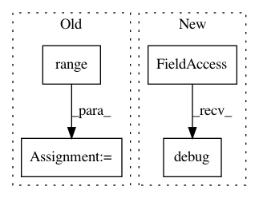

9801f28774b8d4aeed7d65025bf2451814c1db6d,chainerrl/agents/ddpg.py,DDPG,batch_act,#DDPG#Any#,347
Before Change
batch_xs = self.batch_states(
[[obs] for obs in batch_obs],
self.xp, self.phi)
batch_action = [
self.policy(batch_xs[i]).sample()
for i in range(len(batch_obs))]
// Q is not needed here, but log it just for information
// q = self.q_function(batch_xs, batch_action)
// Update stats
After Change
// Update stats
self.average_q *= self.average_q_decay
self.average_q += (1 - self.average_q_decay) * float(q.array)
self.logger.debug("t:%s a:%s q:%s",
self.t, batch_action.array[0], q.array)
return [cuda.to_cpu(action.array) for action in batch_action]
def batch_act_and_train(self, batch_obs):
Select a batch of actions for training.
In pattern: SUPERPATTERN
Frequency: 4
Non-data size: 4
Instances
Project Name: chainer/chainerrl
Commit Name: 9801f28774b8d4aeed7d65025bf2451814c1db6d
Time: 2019-03-26
Author: prabhat.nagarajan@gmail.com
File Name: chainerrl/agents/ddpg.py
Class Name: DDPG
Method Name: batch_act
Project Name: pantsbuild/pants
Commit Name: 8479b6a979a0433c9b360c340fca454f03b0ff77
Time: 2016-04-07
Author: nhoward@twopensource.com
File Name: contrib/python/src/python/pants/contrib/python/checks/tasks/checkstyle/checker.py
Class Name: PythonCheckStyleTask
Method Name: get_nits
Project Name: datascienceinc/Skater
Commit Name: 5fe98231a26e08d81f9684a681af43bc2fb2b847
Time: 2017-03-16
Author: aikramer2@gmail.com
File Name: pyinterpret/model/model.py
Class Name: Model
Method Name: check_output_signature
Project Name: automl/SMAC3
Commit Name: 8b93c479bdd284b6377bea771c0f8d1495a58f42
Time: 2016-01-08
Author: lindauer@informatik.uni-freiburg.de
File Name: smac/smbo/smbo.py
Class Name: SMBO
Method Name: run